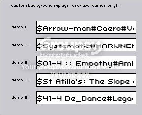

This thread got me to thinking, what if you could choose your own demos to have in the main menu? Like, you'd be given a list of all your level/userlevel demos to put in. (And N records all of your userlevel demos... ALL of them. Ever. I found this out when I looked in a .sol file once to see what it was like. And when you take a level out of your userlevels, the demo stays. It also records the level data, so you could pick from all the levels you've ever had in your userlevels.)
Not a bad idea. Rather useless, but I still don't see why not. It could be kinda fun, actually.
Although I have to disagree with one part.
Maybe something like this? It's too big to put into the Configure menu, but you get the idea.
Although I have to disagree with one part.
Like, you'd be given a list of all your level/userlevel demos to put in. (And N records all of your userlevel demos... ALL of them. Ever.I'd rather have an option to copy + paste your favourite demos somewhere. A thousand-level list is just too much. And what about those demos made in the debug mode?

Maybe something like this? It's too big to put into the Configure menu, but you get the idea.
Maybe something like this? It's too big to put into the Configure menu, but you get the idea.
I like this idea.
Brilliant Idea! I'd be able to put all my best kills and accomplishments in!
I like it!
I like it!